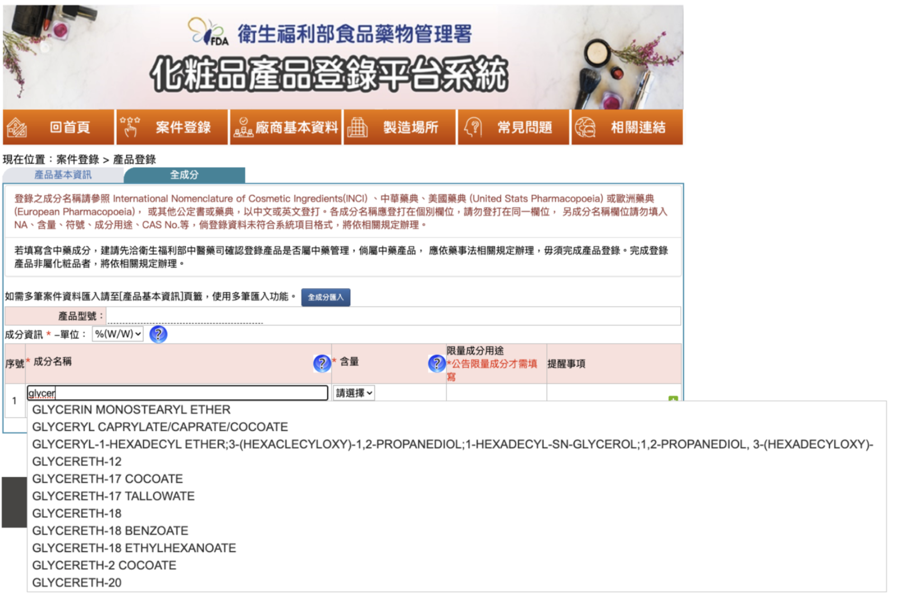

全成分登錄優化
資料字典化 + 批次匯入 + 法定警語自動帶入（A 章主戰場）
全成分登錄是化粧品登錄系統最複雜、最容易出錯、影響最深遠的環節。 本提案分三大改革主題：資料品質、操作流程、法定警語連動，三者環環相扣。
BEFORE — 現行 3 大痛點

⚠ 痛點 A：資料分裂
WATER ／ AQUA ／ AQUA / WATER ／
WATER (AQUA) ／ WATER / AQUA ／ ...
- −同 INCI／同 CAS 散成多筆
- −萃取物無 CAS，主鍵設計失靈
- −業者自由輸入文字，無 canonical reference
⚠ 痛點 B：操作流程
- −雖提供 Excel 模板匯入，但須離線編輯後再上傳，無即時驗證
- −搜尋僅支援前綴比對（輸入「glycer」才找到 GLYCERIN）
- −常用配方無法存範本，每次重新輸入
- −無 API 介接，業者 ERP 無法直接 push 與雙向同步
⚠ 痛點 C：警語遺漏
- −限制成分對應法定警語靠業者記憶
- −TFDA 公告修訂後，業者後台無自動更新
- −AI 合規工具無法事前預檢
AFTER — 3 大改革主題
主題 A · 資料品質升級
業者搜尋「water」即時 lookup：
✓ 同義別名整合為一筆
- +主鍵 = TFDA-INC 永久 ID（非 CAS，萃取物也適用）
- +同 INCI／CAS 後台自動整合，aliases 收為 array
- +業者強制從字典選，不接受自由文字
- +萃取物以 INCI（含拉丁學名+部位）為 canonical key
主題 B · 操作流程改善（三階段）
📋 短期（本次改版）
Excel／CSV 拖放
+ 即時 schema 驗證
🤖 中期（AI 輔助）
貼成分文字／丟配方 PDF
LLM 解析 + 字典對應
🔌 長期（API-Ready）
業者 ERP 直接 push
淘汰 Excel 中介
🤖中期 · AI 輔助輸入流程（針對無 ERP 中小業者）
貼上 INCI 文字／上傳配方 PDF
OCR 擷取文字層 → LLM 斷詞、同義詞收斂、對應 TFDA 字典（兩段技術邊界明確）
三級信心分數預覽（可量化、可審計）
一鍵匯入登錄欄位
自動填入 canonical INCI 名稱、用途類別，連動觸發法定警語（→ 主題 C）
人工複核低信心項
處理萃取物拉丁學名、業界冷僻別名等 LLM 沒把握項（WATER／AQUA 同義詞由主題 A canonical aliases 自動處理，不再人工）
🔒 配方機密處理（業者最敏感點）
採地端部署或私有雲；僅送成分名稱字串給 LLM，不送配方比例，避免商業機密外流。
🛠 技術基礎
LLM 微調 + INCI 資料庫（PCPC）+ TFDA 法規庫。業界已有 INCIDecoder、Cosmile 等第三方反向辨識工具，反映「AI 解 INCI」的需求成熟、技術路徑可行。
即時驗證匯入
模糊搜尋
配方範本
- +Excel／CSV 拖放匯入 + 即時 schema 驗證（升級現行離線編輯模式）
- +模糊搜尋（中英 + INCI + CAS + 別名）
- +常用配方範本一鍵套用
- ★AI 輔助輸入：貼成分文字／丟配方 PDF → LLM 解析、信心分數標示、字典對應；地端部署、不送配方比例
- →API-Ready：業者 ERP 直接 push 成分資料，雙向同步、淘汰 Excel 中介（對應 D-2 schema + D-8 OpenAPI）
主題 C · 法定警語自動帶入
業者選 SALICYLIC ACID 後：
不得使用於三歲以下孩童（洗髮產品得免）
業者補充警語（自由編輯）
- +限制成分輸入後，法定警語自動帶入「使用注意事項」
- +法定區塊鎖定不可改 + 業者補充欄並存
- +TFDA 公告修訂 → 透過 D-5 事件驅動推播更新
法源與架構支撐
法源：
登錄辦法第 4 條第 2 項「應以中文、英文、號碼或國際通用符號」（INCI 即此）；
第 4 條第 1 項第 6 款「產品使用注意事項」（法定警語連動依據）；
第 4 條第 1 項第 9 款「中央主管機關訂有使用限量之成分」。
架構支撐：
對應本提案 D 章
D-1 永久 ID ／
D-2 欄位 Schema ／
D-5 事件驅動 ／
D-6 國際編碼對齊。